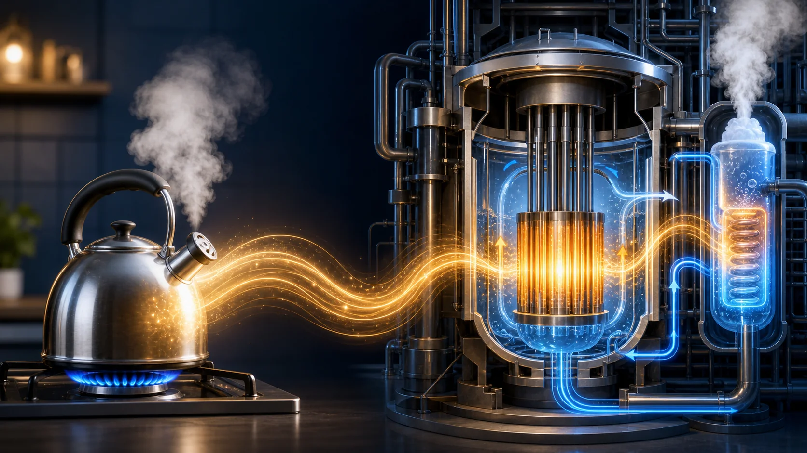
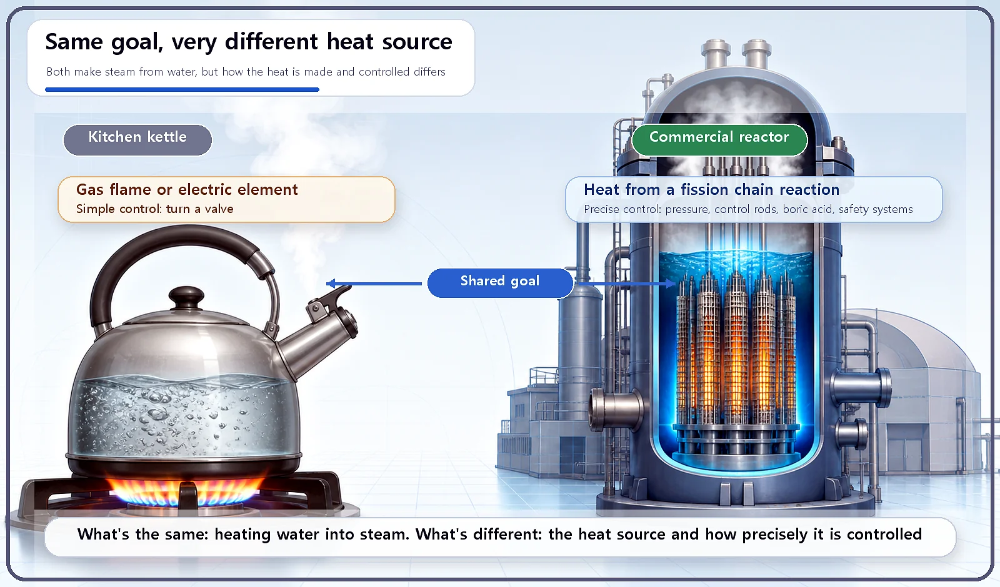
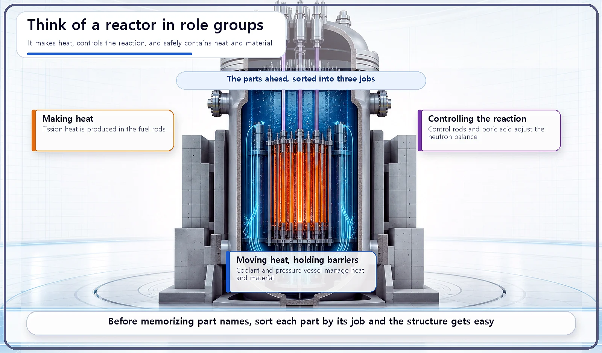

Reactor Components · 051
Is a Nuclear Reactor Just a Giant Kettle? — How a Reactor Really Heats Water
The goal is the same as a kettle's: turn water into steam. The heat source, and what it takes to control it safely, is not.

A nuclear power plant does the same basic job as a kettle: it heats water into steam, and the steam spins a turbine that makes electricity. What sets a reactor apart is its heat source, a fission chain reaction in uranium, and everything needed to control that heat safely: high pressure, precise regulation, and several layers of safety equipment. [1]
Picture a kettle on the stove
Fill a kettle with water and set it on a gas burner. The flame heats the bottom of the kettle, that heat passes into the water, and before long the water boils and turns to steam. About as simple as physics gets.
Here's the surprise: the most basic principle behind a nuclear power plant isn't very different. Heat water, make steam, and use that steam to drive something. The big picture is exactly the same. So is a reactor really nothing more than an enormous kettle?
Same goal, and then the paths split
Sum up the core purpose of a nuclear power plant in one sentence and you get this: heat water to make steam, use the steam to spin a turbine, and turn that motion into electricity. Judged only by that end goal, it is essentially the same job a kettle does.
What is completely different is where the heat comes from. A kettle is heated by a gas flame or an electric element. A reactor heats water with the heat released by a fission chain reaction in uranium, in which uranium nuclei split one after another and each split releases energy. Fission energy is far more concentrated than the energy you get from burning the same weight of ordinary fuel.

So why isn't "just a kettle" good enough?
This is where the real differences begin.
First, the pressure and temperature are different. In the most common type of commercial reactor, the pressurized water reactor (PWR), the coolant (the water that carries heat away from the fuel) is held at a very high pressure. Under that pressure, water stays liquid instead of boiling, even at temperatures far above its normal boiling point. Keeping the pressure up lets the water carry heat away more efficiently. That calls for pressure management in a completely different league from simply putting a lid on a kettle.
Second, the heat source must be controlled with great precision. Close the valve on a gas stove and the flame goes out immediately. A reactor's heat source, the fission chain reaction, can't be switched on and off that simply. Control rods, boric acid dissolved in the water, and several built-in feedback effects all have to work together to hold the reaction at exactly the desired level.
Third, it needs several layers of safety equipment. The fuel that makes the heat, the coolant that carries it, the control rods that regulate the reaction, and the sturdy structures that surround everything all have to fit together tightly before that heat can be drawn out safely.

The parts we'll open up one by one
This part of the series takes the "giant kettle" apart piece by piece:
| Job | Components |
|---|---|
| Making heat | Fuel rods (fuel pellets inside cladding) and the fuel assemblies that bundle them |
| Helping or regulating the reaction | Moderator, coolant, control rods, boric acid, reflector |
| Containing heat and pressure | Reactor pressure vessel (steam generators and the containment building come later) |
The names may sound unfamiliar at first, but look at them one at a time and you'll find that many of them resemble devices we use in everyday life.
Two common misconceptions
"A reactor just boils water, so it must be simple." The end goal, heating water to make steam, is simple. The structure needed to control that heat source safely and precisely is anything but.
"The water inside a reactor is boiling furiously." It depends on the reactor type, but in the most common design, the pressurized water reactor, the normal operating condition is the opposite: the pressure is kept high precisely so that the coolant does not boil.
Key takeaways
The end goal of a nuclear power plant, heating water to make steam and spin a turbine, is essentially the same as a kettle's. The decisive differences are the heat source, a fission chain reaction, and what it takes to control it safely: pressure management, precise regulation, and multiple layers of safety equipment.